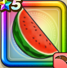

スイカブーメラン
攻略班 5.5点 / かまいたち必中拳いやしの果汁パワフルスロースイカスライサー
くわしい特徴
【レベル別習得スキル】 Lv1かまいたち（消費MP：5）エレメント系に威力180%それ以外の系統には130%の体技ダメージを与える Lv10必中拳（消費MP：3）動きを読んで拳を繰り出し必ず敵1体に威力150%の体技ダメージを与える Lv15いやしの果汁（消費MP：12）味方全体のHPを回復する Lv20パワフルスロー（消費MP：8）全力で投げつけて敵全体に攻撃力が低下しない威力110%の体技ダメージを与える Lv30スイカスライサー（消費MP：21）敵1体に威力220％のバギ属性斬撃ダメージを与える Lv35さいだいHP+5 Lv40さいだいMP+8 Lv45攻撃時+2%の確率で混乱を与える Lv50攻撃力+5 【限界突破スキル】 1凸植物系へのダメージ+10% 2凸エレメント系へのダメージ+10% 3凸スイカスライサーのダメージ+10% 4凸スイカスライサーのダメージ+20%